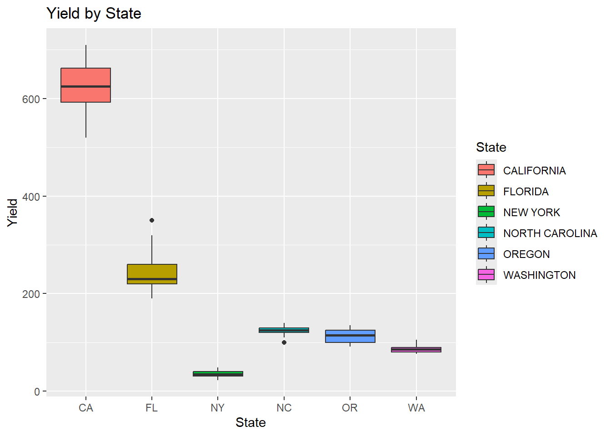
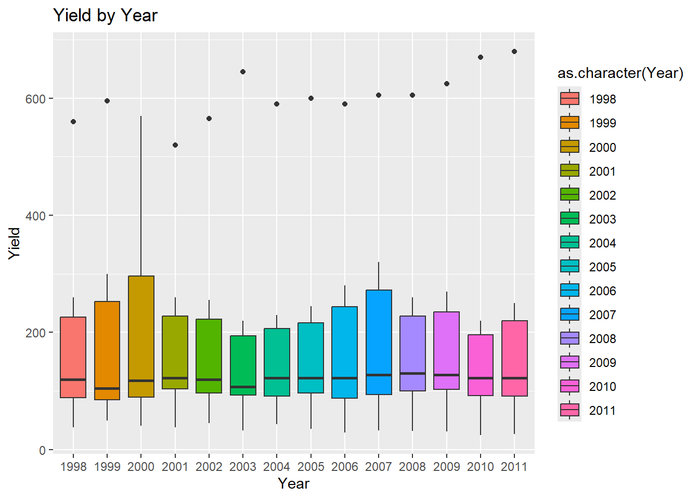
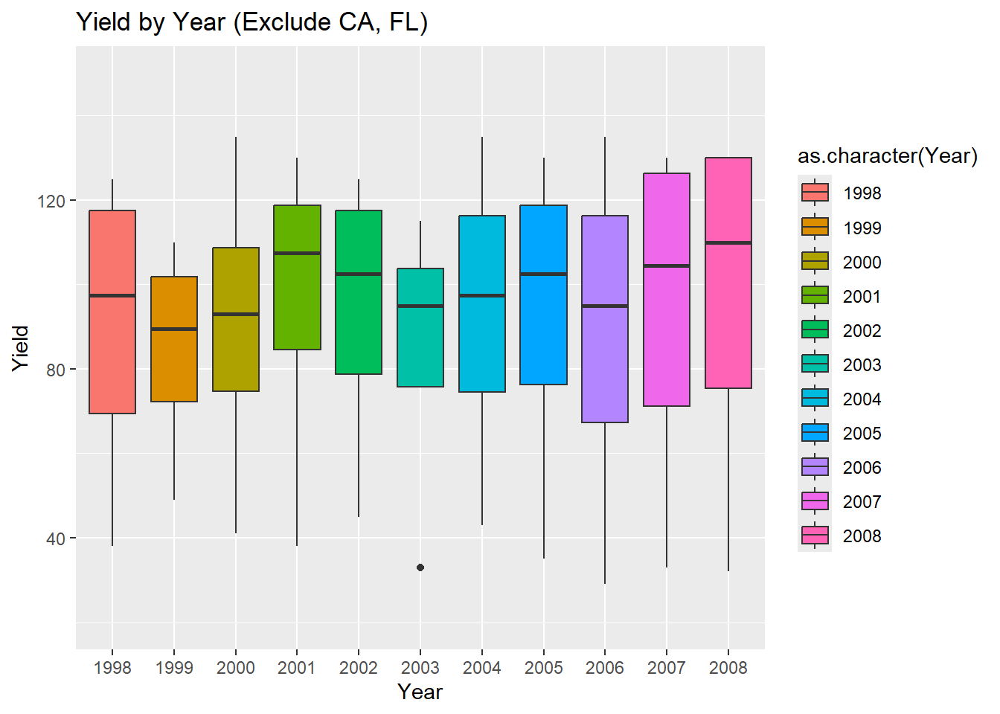
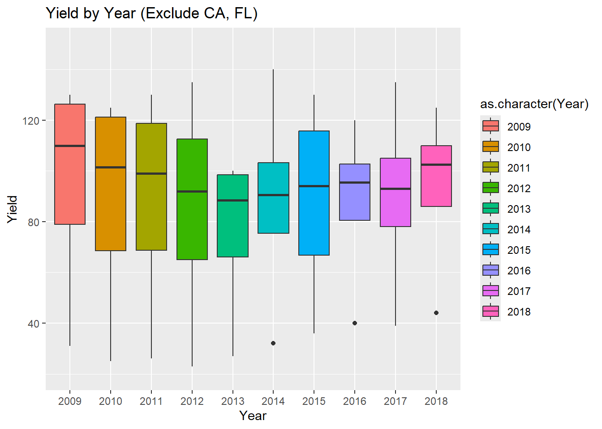
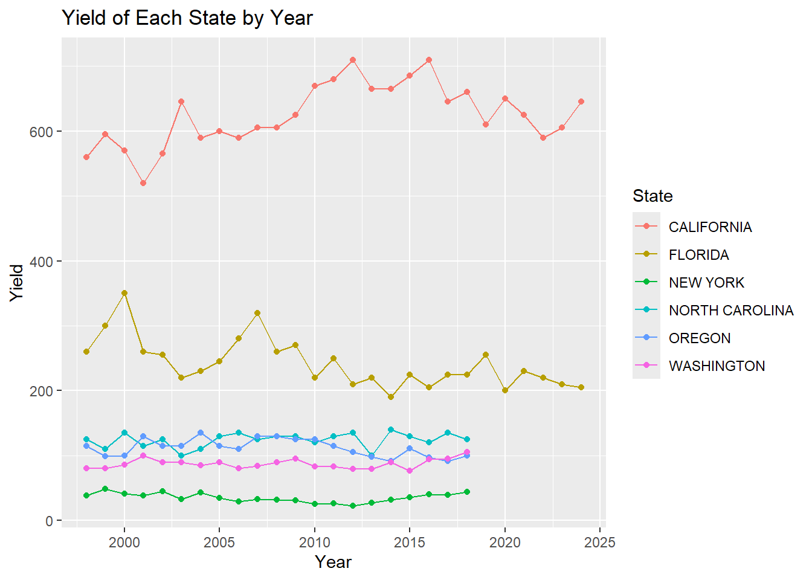

library(knitr)
library(kableExtra)
library(tidyverse)
library(stringr)
library(ggplot2)Assignment F Group 9 Report
Introduction
In this project, we will explore the data of strawberry agriculture in the United States obtained from USDA. Specifically, our research will focus on the strawberry yield, the ratio of crop grown to the unit area of land, of various states from 1998 to 2024.
Firstly, we will conduct some basic exploratory data analysis (EDA) on the survey data of strawberry yield of some selected states, trying to answer questions like:
1) How did the yield of each state differ?
2) How did the yield of each year differ?
3) How did the yield of each state change across the years?
Next, we will explore the census data on the strawberry yield of the entire U.S.,
Additionally, we will see what other insights about strawberry agriculture in the U.S. may be extracted from the data available to us.
Set Up
# Define function: drop_one_value_col, which drops all columns that contain only one value
drop_one_value_col <- function(df){
drop <- c()
for (i in 1:ncol(df)){
uni <- unique(df[,i])
if (is.data.frame(uni)){
unique_val <- nrow(unique(df[,i]))
} else {
unique_val <- length(unique(df[,i]))
}
if (unique_val == 1){
drop <- c(drop, i)
}
}
if (length(drop) != 0){
df <- df[,-drop]
}
df
}EDA: Strawberry Yield of Selected States
Load and Clean the Data
# Load the strawberrt data from csv file
strawberry <- read.csv("strawberry_10oct25.csv") %>%
# Drop all single value column
drop_one_value_col()
# Divide the data into two parts: survey & census
strawberry.sur <- strawberry %>%
filter(Program=="SURVEY")
strawberry.cen <- strawberry %>%
filter(Program=="CENSUS")Select data that is relevant to our research theme: yield
Since state census data contains nothing relevant to yield, we will focus solely on the survey data for this section
# Select survey data
strawberry.sur <- strawberry %>%
filter(Program=="SURVEY") %>%
# Select Data.Item rows that contains information relevant to yield
filter(grepl("ACRES|PRODUCTION|YIELD", Data.Item)) %>%
# Drop all one value columns
drop_one_value_col()
# Clean the data
# Remove all "STRAWBERRIES - " from the column Data.Item, since they serve no purpose
strawberry.sur$Data.Item <- str_remove_all(strawberry.sur$Data.Item, "STRAWBERRIES - ")
# Remove all "STRAWBERRIES, " from the column Data.Item, since they serve no purpose
strawberry.sur$Data.Item <- str_remove_all(strawberry.sur$Data.Item, "STRAWBERRIES, ")
# Replace "(D)" with NA
strawberry.sur$Value[strawberry.sur$Value ==" (D)"] <- NA
# Turn all values into numeric
strawberry.sur$Value <- str_remove_all(strawberry.sur$Value, ",")
strawberry.sur$Value <- as.numeric(strawberry.sur$Value)Reshape the data
strawberry.sur.wider <- strawberry.sur %>%
pivot_wider(
names_from = Data.Item,
values_from = Value
) %>%
# We do not consider "FORECAST" data, filter those rows out
filter(!grepl("FORECAST", Period)) %>%
# Arrange rows by state
arrange(State) %>%
# Drop columns that contained "TON"
select(!contains("TON")) %>%
# Drop all one value columns
drop_one_value_col()Research Question: How does each state’s yield differ?
# Load the Cleaned Data
df <- read_csv("strawberry_yield_cleaned.csv", show_col_types = FALSE)
# Filter for "CWT / ACRE"
df_analysis <- df %>%
filter(str_detect(`Data Item`, "CWT / ACRE"))
# Plot: Bar Chart of Average Yield by State
plot_avg_yield_bar <- df_analysis %>%
group_by(State) %>%
summarise(Mean_Yield = mean(Yield, na.rm = TRUE)) %>%
ggplot(aes(x = reorder(State, Mean_Yield), y = Mean_Yield)) +
geom_bar(stat = "identity", fill = "steelblue") +
coord_flip() +
labs(title = "Average Strawberry Yield by State",
x = "State",
y = "Average Yield (CWT / ACRE)") +
theme_minimal()
print(plot_avg_yield_bar) 
Here is the histogram shows average yield including each year, for each states. It is obvious that California has the highest yield, and New York has the lowest. Next is another plot shows distribution of yield for each state.
strawberry.sur.wider %>%
ggplot(aes(x=State, y=`YIELD, MEASURED IN CWT / ACRE`, fill=State)) +
scale_x_discrete(labels=c("CA", "FL", "NY", "NC", "OR", "WA")) +
geom_boxplot() +
labs(x="State", y="Yield") +
ggtitle("Yield by State")
It seems there is an clear differences in yield of strawberry between states. California has a yield much higher than any other state, while the yield of Florida, despite having a much lower comparing to California, is significantly higher than the rest of the states.
Research Question: How does each year’s yield differ?
strawberry.sur.wider %>%
filter(Year %in% 1998:2011) %>%
ggplot(aes(x=as.character(Year), y=`YIELD, MEASURED IN CWT / ACRE`, fill=as.character(Year))) +
geom_boxplot() +
labs(x="Year", y="Yield") +
ggtitle("Yield by Year")
strawberry.sur.wider %>%
filter(Year %in% 2012:2024) %>%
ggplot(aes(x=as.character(Year), y=`YIELD, MEASURED IN CWT / ACRE`, fill=as.character(Year))) +
geom_boxplot() +
labs(x="Year", y="Yield") +
ggtitle("Yield by Year") 
From the graph, we can see that there is a great variation in the yield of each year. Judging by the previous graph, we conclude that such variation is due to the fact that two of the states, California and Florida, have much higher yield comparing to the rest. For this reason, we decide to redo the plot while excluding the data from California and Florida.
strawberry.sur.wider %>%
filter(Year %in% 1998:2008, !State %in% c("CALIFORNIA", "FLORIDA")) %>%
ggplot(aes(x=as.character(Year), y=`YIELD, MEASURED IN CWT / ACRE`, fill=as.character(Year))) +
geom_boxplot() +
labs(x="Year", y="Yield") +
ggtitle("Yield by Year (Exclude CA, FL)") +
ylim(20,150)
strawberry.sur.wider %>%
filter(Year %in% 2009:2024, !State %in% c("CALIFORNIA", "FLORIDA")) %>%
ggplot(aes(x=as.character(Year), y=`YIELD, MEASURED IN CWT / ACRE`, fill=as.character(Year))) +
geom_boxplot() +
labs(x="Year", y="Yield") +
ggtitle("Yield by Year (Exclude CA, FL)") +
ylim(20,150)
Here we can see that the variation of yield between different years is much smaller. Also, the yield seems to be quite stable across the years.
Research Question: How does the yield of each state change by year?
strawberry.sur.wider %>%
ggplot(aes(x=Year, y=`YIELD, MEASURED IN CWT / ACRE`, color=State)) +
geom_line() +
geom_point()+
labs(x="Year", y="Yield") +
ggtitle("Yield of Each State by Year")
From this graph we can see that California maintain a much higher yield, as well as a much higher variation, comparing to all other states across the years and has an increasing trend.
Florida also seems to have a yield (and variation) much higher than all other states except for California. It also seems to have a decreasing trend.
The yields for all other states are fairly close to each other and do not vary much.
# Plot : Yield vs. Year, Faceted by State
plot_faceted_time <- ggplot(df_analysis, aes(x = Year, y = Yield)) +
geom_point() +
geom_smooth(method = "lm", se = FALSE) +
facet_wrap(~ State, scales = "free_y") +
labs(title = "Strawberry Yield Over Time by State",
subtitle = "Each state's trend is shown separately",
x = "Year",
y = "Yield (CWT / ACRE)") +
theme_bw()
print(plot_faceted_time)`geom_smooth()` using formula = 'y ~ x'
Here is another figure with the group of plots that shows each states field trend separately in detail. We can get similar result. California has the highest yield and increasing trend. Florida has high yield comparing to the rest of 4 states, but has decreasing trend.
EDA: Organic vs Conventional Strawberry Yield of the Entire U.S.
Load and clean the data
# Load the strawberrt data from csv file
strawberry.national <- read.csv("StrawberryCensusNational.csv") %>%
filter(!grepl("AREA GROWN", Domain)) %>%
filter(!grepl("OPERATIONS", Data.Item)) %>%
# Drop all single value column
drop_one_value_col()unique(strawberry.national$Domain.Category)[1] "NOT SPECIFIED"
[2] "ORGANIC STATUS: (NOP USDA CERTIFIED)"
[3] "ORGANIC STATUS: (NOP USDA CERTIFIED & EXEMPT)"
[4] "ORGANIC STATUS: (NOP USDA EXEMPT)" unique(strawberry.national$Data.Item) [1] "STRAWBERRIES - ACRES BEARING"
[2] "STRAWBERRIES - ACRES GROWN"
[3] "STRAWBERRIES - ACRES NON-BEARING"
[4] "STRAWBERRIES, ORGANIC - ACRES HARVESTED"
[5] "STRAWBERRIES, ORGANIC - PRODUCTION, MEASURED IN CWT"
[6] "STRAWBERRIES, ORGANIC - SALES, MEASURED IN $"
[7] "STRAWBERRIES, ORGANIC - SALES, MEASURED IN CWT"
[8] "STRAWBERRIES, ORGANIC, FRESH MARKET - SALES, MEASURED IN $"
[9] "STRAWBERRIES, ORGANIC, FRESH MARKET - SALES, MEASURED IN CWT"
[10] "STRAWBERRIES, ORGANIC, PROCESSING - SALES, MEASURED IN $"
[11] "STRAWBERRIES, ORGANIC, PROCESSING - SALES, MEASURED IN CWT"
[12] "STRAWBERRIES, ORGANIC - SALES IN CONVENTIONAL MARKETS, MEASURED IN $"
[13] "STRAWBERRIES, ORGANIC - SALES IN CONVENTIONAL MARKETS, MEASURED IN CWT"
[14] "STRAWBERRIES, ORGANIC - SALES IN ORGANIC MARKETS, MEASURED IN $"
[15] "STRAWBERRIES, ORGANIC - SALES IN ORGANIC MARKETS, MEASURED IN CWT"
[16] "STRAWBERRIES - ACRES HARVESTED"
[17] "STRAWBERRIES - ACRES NOT HARVESTED" strawberry.national$Data.Item <- str_remove_all(strawberry.national$Data.Item, "STRAWBERRIES - ")
strawberry.national$Data.Item <- str_remove_all(strawberry.national$Data.Item, "STRAWBERRIES, ") Conclusion
EDA: Strawberry yield of selected states
We conclude that we have discovered some interesting insghts from the yield data of different states at different years.
1) California has a significantly higher yield comparing to other states and is overall increasing.
2) Florida has a yield much lower than California, but also much higher than the rest of the states. Though it seems to be decreasing overall.
3) All other states have similar and stable yield.
Our research topics focus on columns containing the data of “acres”, “total productions”, “yield”. There are other columns in the dataframe that are potentially useful for other research topics (ex., comparing the productions between “Fresh Market”, “Processing”, “Not Sold”, “Utilized”). But, due to the vast amount of missing values in those columns, we conclude that they do not contain much insights and therefore will be ignored for the purpose of this project.
We may also conduct some additioanl EDA on other topics related to the yield from the data (e.g., acres planted vs yield).